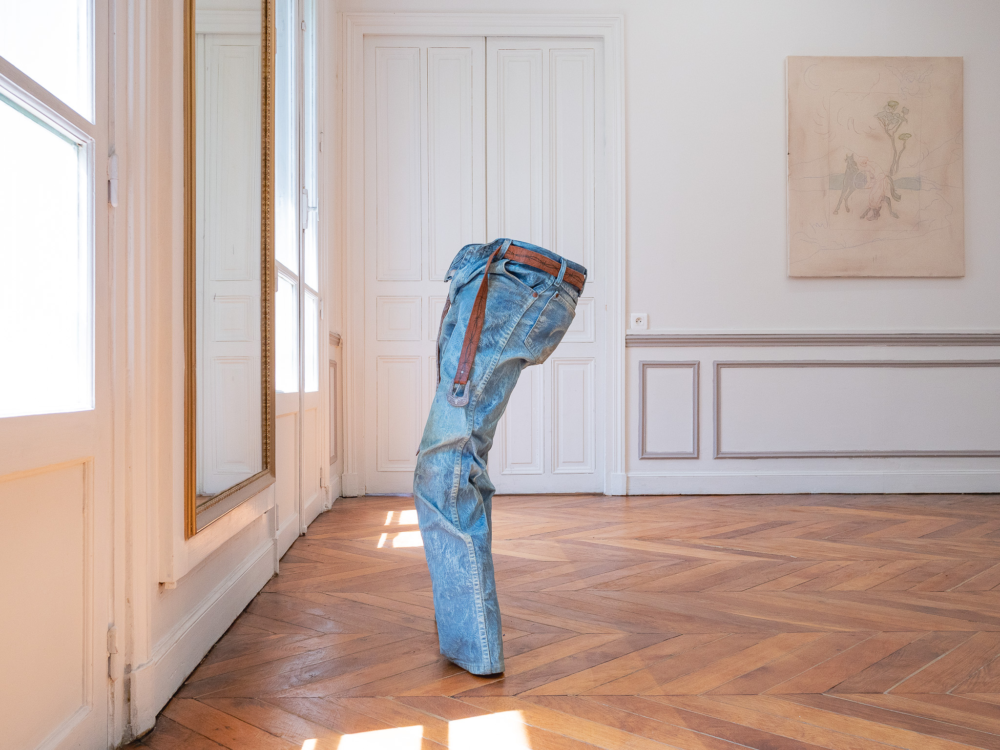
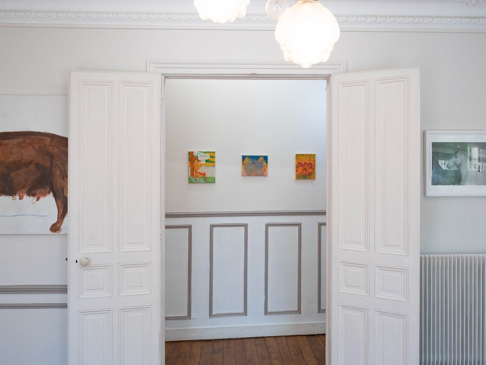
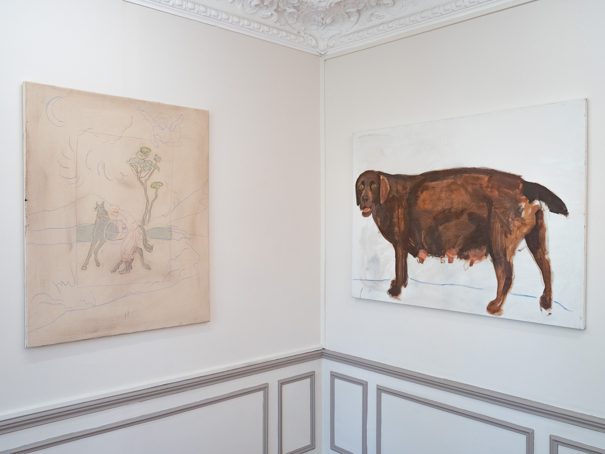
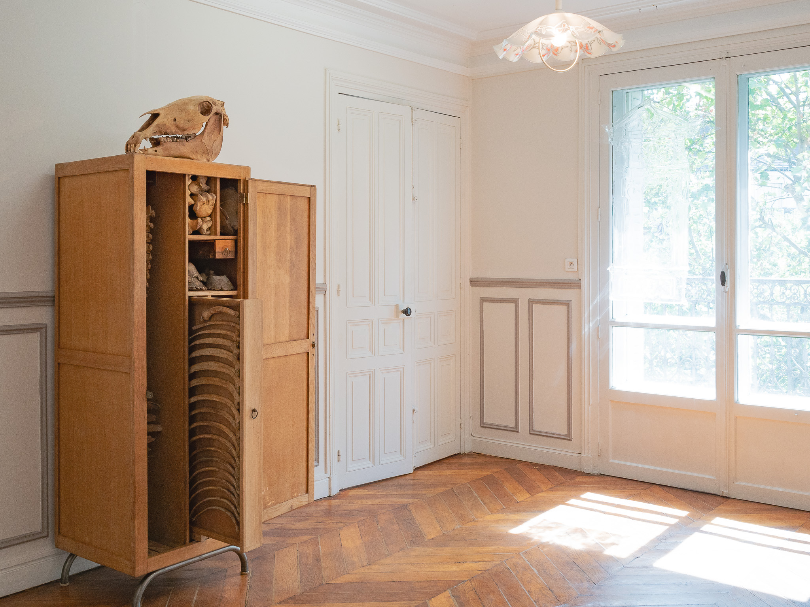
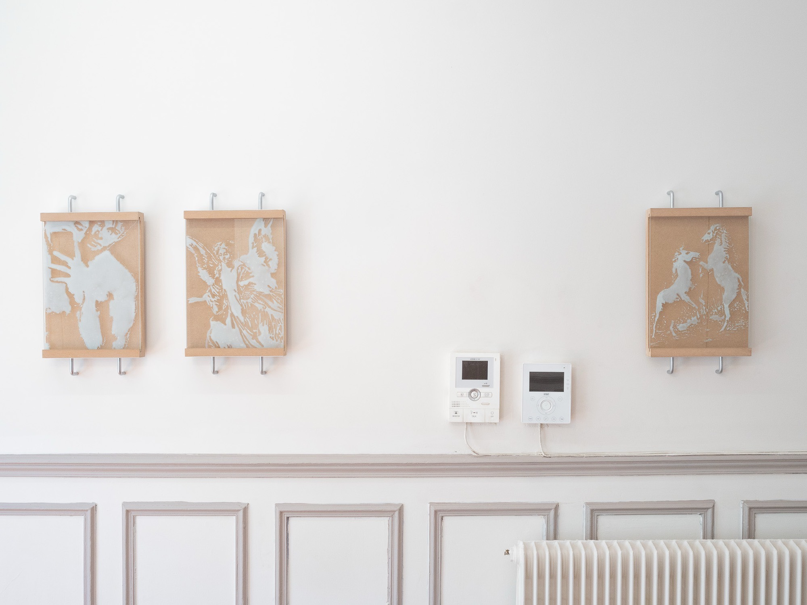
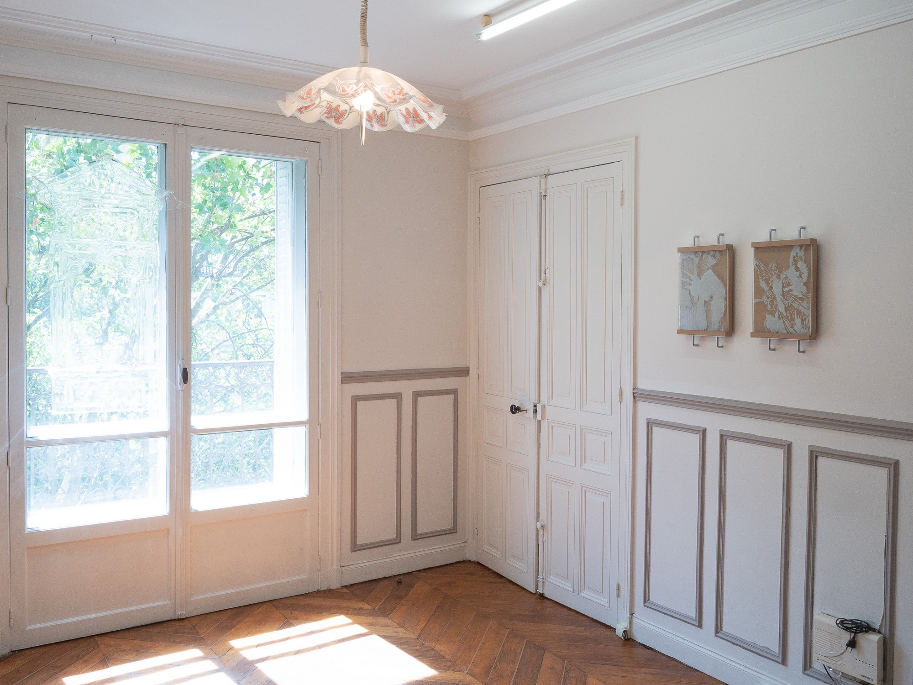
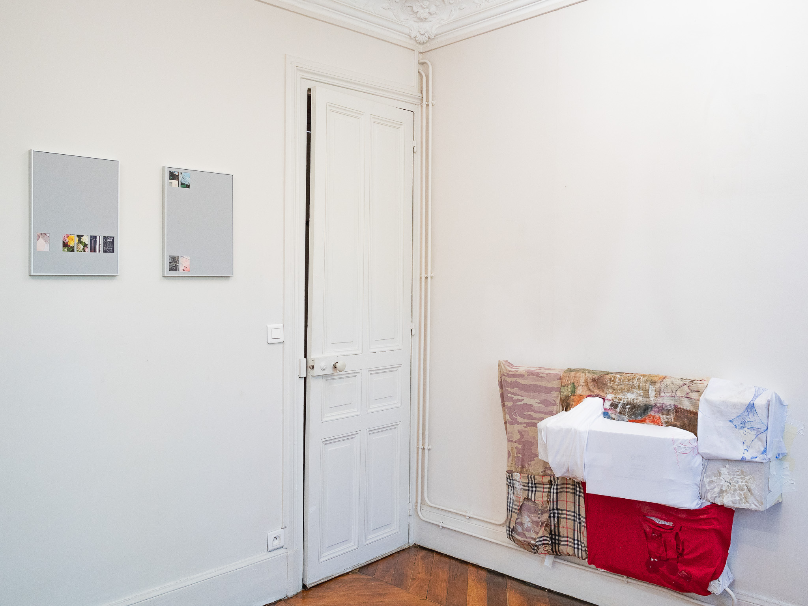
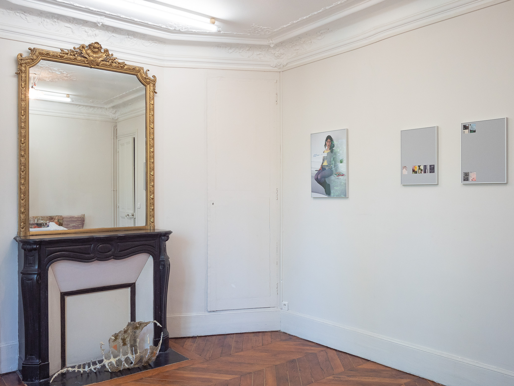

La Bride
KR01 · terminée
Le déclencheur de cette exposition, c'est, pour l'essentiel, que le cheval préféré de mon frère a récemment été transformé en salami. Repose en paix, Brown Beauty. La seconde raison, la vraie, c'est que Gustav et Leon, de bendingwords, me prêtent leur bureau. Merci.
Quant au titre : « La Bride » peut se lire aussi bien en anglais qu'en français. Les deux sens n'ont, au premier abord, rien à voir l'un avec l'autre, et l'observation n'est probablement qu'une coïncidence. Et pourtant, de cette tension, on peut tirer des questions communes de contrôle, de pouvoir et de désir. Si ces éléments venaient à affleurer dans les œuvres, libre à qui le souhaite de les suivre.
Permettez-moi d'emprunter quelques pages à « Avoir ou être ? » d'Erich Fromm pour mieux comprendre tout cela. Deux poèmes y sont mis en regard, chacun reflétant une attitude différente face à la possession du savoir.
D'abord, un poème du poète anglais du XIXe siècle, Tennyson :
Fleur dans les fissures du mur,
Je t'arrache aux fissures,
Je te tiens là, racine et tout, dans ma main,
Petite fleur — mais si je pouvais comprendre
Ce que tu es, racine et tout, et tout en tout,
Je saurais ce qu'est Dieu, et ce qu'est l'homme.
Puis le haïku de Bashō, qui, en traduction, donne à peu près ceci :
Quand je regarde attentivement,
Je vois la nazuna en fleur
Près de la haie !
(la nazuna est une fleur)
Plutôt que d'examiner les œuvres réunies ici en quête d'un terrain commun — et, ce faisant, de déraciner la fleur pour finir par la tuer — vous — êtes — chaleureusement — invités — à — regarder — attentivement.
Si l'on considère que les pratiques réunies ici viennent de Berlin, Copenhague, Zurich, Winterthour, Tbilissi, Vienne, Helsinki et Paris, il apparaît vite que regarder attentivement est la seule manière d'aborder les œuvres.
Mais oui, l'exposition parle aussi de chevaux.
The trigger for this exhibition is, essentially, that my brother's favourite horse was recently processed into salami. Rest in peace, Brown Beauty. The second, and real, reason is that Gustav and Leon from bendingwords are letting me use their office. Thank you.
As for the title: « La Bride » can be read in both English and French. The two meanings have, at first, nothing to do with one another, and the observation is probably just a coincidence. And yet, from the tension, one can draw out shared questions of control, power, and desire. Should these elements surface in the works, anyone who wishes is welcome to follow them.
Let me borrow a few pages from Erich Fromm's « To Have or To Be? » to understand this better. In it, two poems are set against one another, each reflecting a different stance toward possessing knowledge.
First, one by the nineteenth-century English poet Tennyson:
Flower in the crannied wall,
I pluck you out of the crannies,
I hold you here, root and all, in my hand,
Little flower—but if I could understand
What you are, root and all, and all in all,
I should know what God and man is.
Then Basho's haiku, which in translation runs more or less like this:
When I look carefully
I see the nazuna blooming
By the hedge!
(nazuna is a flower)
Rather than examining the works gathered here for common ground and thereby uprooting the flower, and ultimately killing it — you — are — warmly — invited — to — look — carefully.
Considering that the practices gathered here come from Berlin, Copenhagen, Zurich, Winterthur, Tbilisi, Vienna, Helsinki, and Paris, it soon becomes clear that looking carefully is the only way to approach the works.
But yes, the exhibition is also about horses.
Artistes — 10 entrées
- Annael Shavit
- Gaia Del Santo
- Henri Chetaille
- Jaakko Uljas
- Jürgen Baumann
- Karim Hussein
- Nanna Kaiser
- Padyn Humble
- Signe Ralkov
- Tekla Kighuradze
Vues d'installation — 9 entrées

«La Bride», vue d'installation, KRAMER, Paris, 2026. Photo : Kramer.

«La Bride», vue d'installation, KRAMER, Paris, 2026. Photo : Kramer.

«La Bride», vue d'installation, KRAMER, Paris, 2026. Photo : Kramer.

«La Bride», vue d'installation, KRAMER, Paris, 2026. Photo : Kramer.

«La Bride», vue d'installation, KRAMER, Paris, 2026. Photo : Kramer.

«La Bride», vue d'installation, KRAMER, Paris, 2026. Photo : Kramer.

«La Bride», vue d'installation, KRAMER, Paris, 2026. Photo : Kramer.

«La Bride», vue d'installation, KRAMER, Paris, 2026. Photo : Kramer.

«La Bride», vue d'installation, KRAMER, Paris, 2026. Photo : Kramer.
Événements — 2 entrées
-
Projection · KR01V
Horses in Motion — 29 août 2026, 12h–18h
Dix œuvres vidéo présentées le temps d'un après-midi, suivies d'un dîner.
- Alina OrlovThe Cavalry, 2024 · 17 min
- Arvin ArtaGermaxxing, 2026 · 14 min
- David O'ReillyThe Horse Raised by Spheres, 2014 · 3 min
- Elisa Jule BraunThe 4 Postapocalyptic Horses: Equus Simulatus und Hippospirulina Libica, 2024/25 · 2 × 5 min
- Hsu Che-YuDemarcation, 2023 · 17 min
- Jennifer ReederThe Secret History, 2002 · 5 min
- Josefin ArnellBeast and Feast, 2023 · 25 min
- Mike Hoolboom3 Dreams of Horses, 2018 · 5 min
- Moritz Stumm & Stefan NeubergerKontrolle, 2024 · 33 min
- Rhona MühlebachThe River, the Horse, & the Woman, 2019 · 8 min
Le TV Dinner a été préparé par Hadya, à partir de 19h. Le dîner a clos l'exposition « La Bride ».
-
Vernissage · KR01
La Bride — 25 juin 2026, 17h–21h
Ouverture de l'exposition « La Bride », dix artistes internationaux.
Pour une demande concernant une œuvre : · formulaire de contact